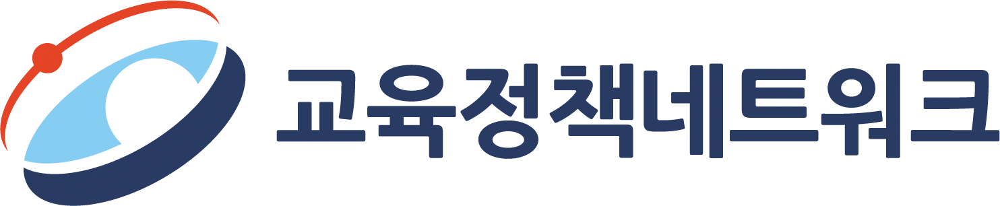

그 현상과 과제 — 확인 퀴즈
이 퀴즈는 교육정책포럼 2026년 3월호의 주요 내용을 바탕으로 제작되었습니다. 교실 이탈 유형, 핀란드 교육 지원 체계, 학업중단 통계 등 포럼의 핵심 개념을 얼마나 이해하고 있는지 확인해보세요.
수록 주제
성열관 교수가 분류한 교실 내 이탈 유형 중, 높은 학업 성취도를 보임에도 불구하고 학교 수업의 효용성을 낮게 평가하여 수업 시간에 잠을 자는 학생들을 지칭하는 용어는 무엇입니까?
핀란드의 'JOPO(유연한 기본교육) 교실'에 대한 설명으로 가장 적절하지 않은 것은 무엇입니까?
박하나 교수가 언급한 고등학교의 구조적 특징 중, 학생들이 '전략적 자퇴'를 선택하게 만드는 주요 원인인 '회복 기회 부재'의 구체적인 의미는 무엇입니까?
2024년 교육통계 자료를 기준으로, 고등학교 체제 유형별 학업중단율이 가장 높게 나타난 학교 유형은 무엇입니까?
핀란드의 3단계 학습 지원 체계 중, 개별 학습 계획(Oppimissuunnitelma)을 바탕으로 시간제 특수교사와의 협력을 통해 제공되는 체계적이고 지속적인 단계는 무엇입니까?